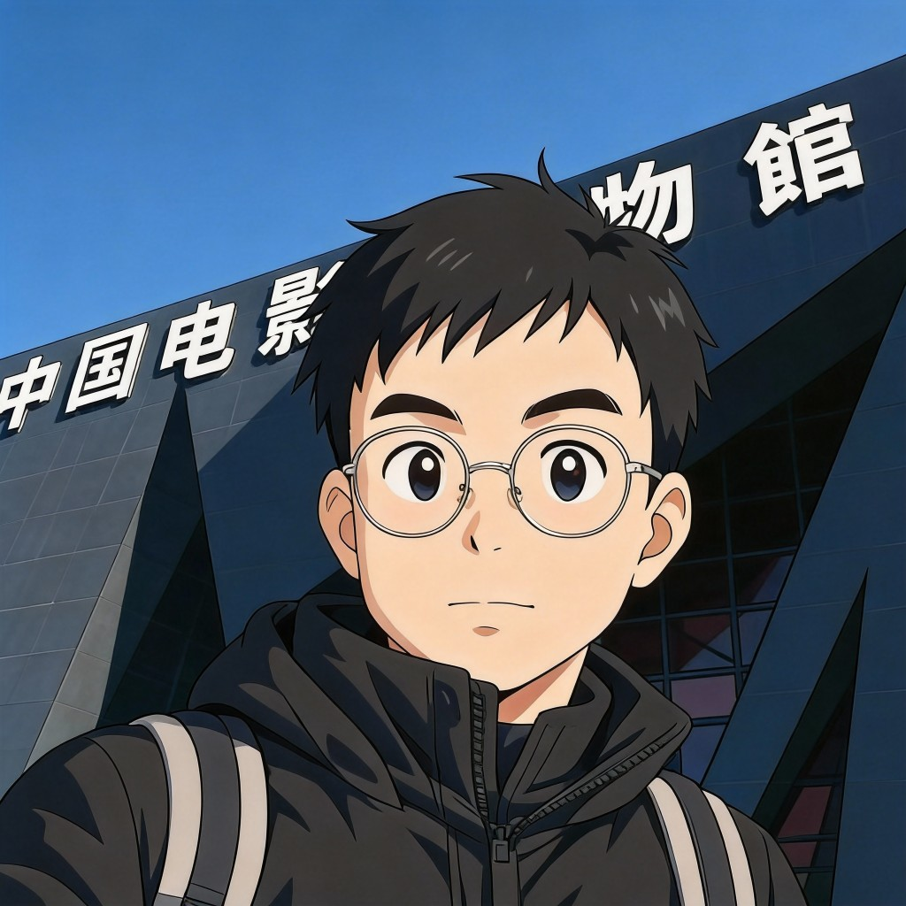

Video Generation · Algorithm Researcher & Engineer
Building the future of AI-generated video. Contributed to
VideoCrafter, HunyuanVideo, and
Seedance. Currently exploring real-time interactive
multimodal generation at vivix.ai.
2,500+ total citations · Published at CVPR, ECCV, ICLR, SIGGRAPH Asia.
Currently looking for like-minded partners in real-time interaction and
multimodal generation to collaborate on AI-native algorithm R&D.
Get in touch if you're interested.

I am a video generation algorithm researcher and engineer specializing in diffusion-based generative models. I obtained my Bachelor's and Master's degrees from South China University of Technology (SCUT) (2015 – 2022). I have worked at Tencent (2021–2024) and ByteDance (2024–2026), participating in VideoCrafter, HunyuanVideo, Seedance, and AI-powered short drama platforms (Douyin & Honguo). Currently, I am at vivix.ai, a startup building multimodal real-time interactive generation technology.
Multimodal real-time interactive generation R&D at an early-stage startup pushing the boundaries of AI interaction.
Participated in Seedance video generation model R&D. Worked on algorithm systems for Douyin and Honguo AI short drama platforms.
Participated in the VideoCrafter series and HunyuanVideo — open-source video generation foundation models.
Bachelor's and Master's degrees. Research on computer vision, video understanding, and video object segmentation.
Focused on overcoming data limitations and establishing open-source foundations for high-quality video diffusion models.
Exploring how to breathe life into static images through video diffusion priors and controllable generation.
Building rigorous evaluation frameworks for video generation models.
Master's research on few-shot video understanding with attention-based architectures.
Open to discussions about collaboration, internships, and job opportunities. Feel free to reach out via email.